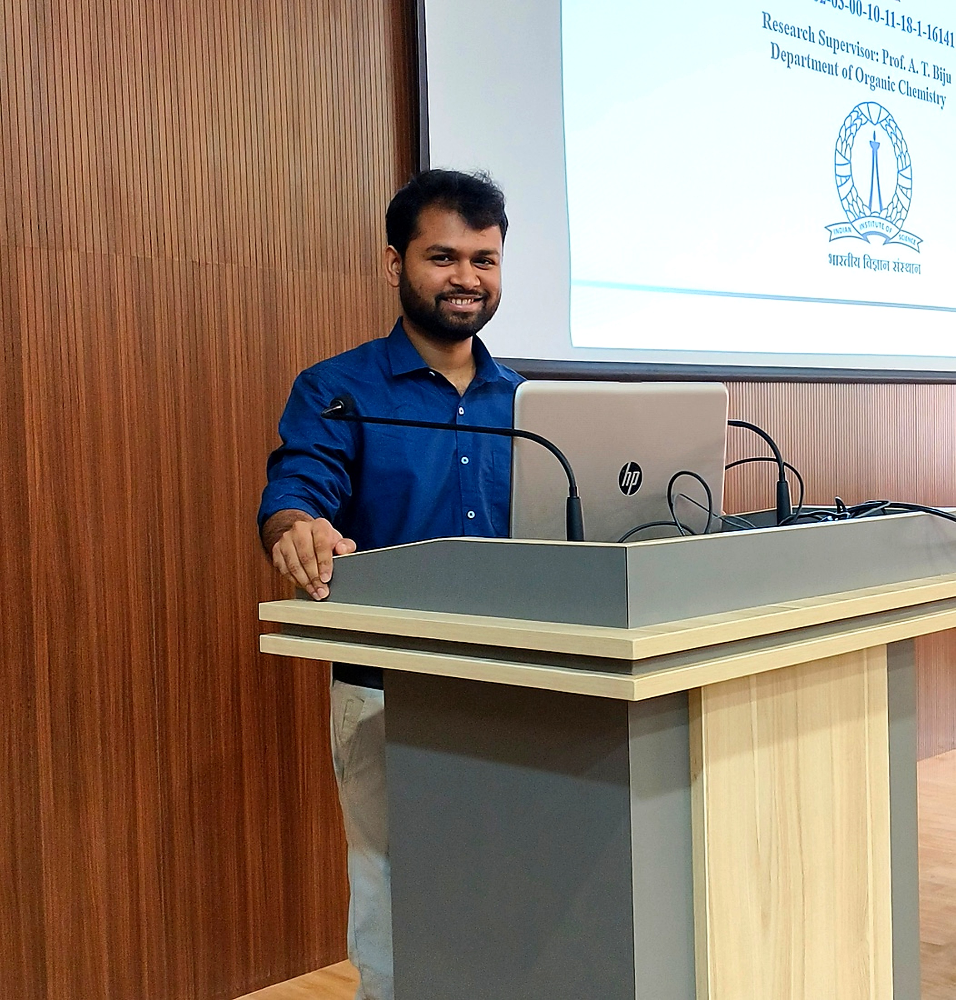

Postdoctoral Fellow · Max-Planck-Institut für Kohlenforschung, Germany
I am a synthetic organic chemist specialising in asymmetric photoredox catalysis. I completed my Ph.D at the Indian Institute of Science, Bangalore, and currently hold a postdoctoral position in the group of Prof. Benjamin List at MPI Kohlenforschung, Mülheim an der Ruhr.

"Synthesis is at the heart of chemistry, the one subdiscipline that is most creative." — E. J. Corey, Nobel Laureate in Chemistry
Dr. Avishek Guin is a postdoctoral fellow at the Max-Planck-Institut für Kohlenforschung in Mülheim an der Ruhr, Germany, working in the laboratory of Prof. Dr. Benjamin List. His postdoctoral research focuses on asymmetric photoredox catalysis, with a particular emphasis on developing new enantioselective transformations enabled by chiral ion-pair interactions under visible light irradiation.
He received his Ph.D. in Organic Chemistry from the Indian Institute of Science (IISc), Bangalore, where he worked under the mentorship of Prof. A. T. Biju. During his doctoral studies, he developed a broad and productive research programme centred on the synthetic utilisation of strained organic intermediates — including arynes, donor–acceptor cyclopropanes, and bicyclo[1.1.0]butanes (BCBs) — for the construction of complex carbocyclic and heterocyclic architectures. He was supported by the prestigious Prime Minister's Research Fellowship (PMRF), one of India's most competitive doctoral fellowships.
Prior to his doctoral training, he completed his M.Sc. in Chemistry from IIT Kharagpur and his B.Sc. from Visva Bharati University. His research has resulted in over 22 publications in leading journals including Nature Catalysis, Journal of the American Chemical Society, Chemical Science, Angewandte Chemie, and Organic Letters, as well as four book chapters in edited volumes published by Wiley-VCH and Elsevier.
We develop new asymmetric photoredox catalytic methods that harness the power of visible light to generate and control reactive open-shell intermediates with high precision. Our goal is to design catalytic systems that deliver molecules of genuine complexity — chiral, three-dimensional scaffolds that are difficult or impossible to access by classical two-electron chemistry — with direct relevance to medicine and molecular science.
The merger of photoredox activation with asymmetric catalysis offers a powerful strategy for generating complex chiral molecules under mild, sustainable conditions. A central challenge in this field is achieving precise stereocontrol over the highly reactive open-shell intermediates generated by single-electron transfer events. Our work explores new catalytic strategies — drawing on ion-pairing interactions, hydrogen-bonding networks, and confined molecular environments — to impose enantioselectivity on photochemically generated radical and radical-ion intermediates.
Strained carbocyclic intermediates — including bicyclo[1.1.0]butanes (BCBs), donor–acceptor cyclopropanes, and related systems — represent a uniquely versatile class of reactive building blocks. Their inherent ring strain drives highly selective bond-breaking events, enabling the construction of complex cyclic architectures from simple precursors. The growing importance of sp³-rich, three-dimensional molecular fragments in modern drug discovery provides a compelling motivation for this programme.
Underpinning both of the above themes is a commitment to developing chemistry that addresses real-world synthetic challenges. Enantiopure cyclopropane-, cyclobutane-, and BCB-containing motifs appear in numerous biologically active compounds and are of growing interest as bioisosteric replacements for aromatic rings in drug design. The rich biodiversity of the Indian subcontinent and the depth of India's pharmaceutical manufacturing sector provide a particularly compelling context for this work.
I am always happy to hear from colleagues, prospective collaborators, and motivated students interested in synthetic organic chemistry.
A curated collection of journals and resources in synthetic and physical organic chemistry.